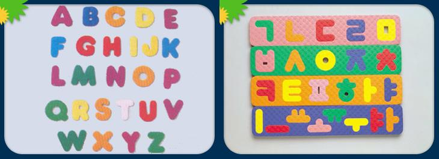

프로그래머의 입장에서 본 한글의 우수성. 그 두번째는 화면 출력. 즉, 폰트(Font)다.
★ 그때 그 시절
Dos 시절을 기억하는가?
윈도우 세대에겐 낯선 단어가 있다. 바로 '한글 에뮬레이터'
사용자들에게는 도스에서 한글 사용이 가능해지게 만들어주는 프로그램이었고
프로그래머의 입장에서는 텍스트 모드를 그래픽 모드로 시뮬레이션 해주는 프로그램이었다.
그 당시 컴퓨터에서는 한글 출력을 기본으로 지원하지 않았었다.
뭐 컴퓨터가 영어권에서 만들어진 것이다 보니 어쩔 수 없는 일이라고 생각하고 영어도 배울겸 영어를 사용할 수도 있었지만. 우리는 의지의 한국인. 조금도 지체 없이 한글 출력을 위해 머리를 굴렸고 결국 한글 에뮬레이터라는 프로그램의 개발에 이르게 된다.
★폰트란?
글꼴을 화면에 출력하기 위해서는 글꼴에 해당하는 이미지를 갖고 있어야 한다. 이것을 폰트(Font)라고 부른다.
도스시절 영문은 8x16 개의 비트 매트릭스(가로 8, 세로 16개의 점이 존재하는 공간으로 생각하자)에 그려졌다. 알다시피 알파벳은 세로로 긴 글자다.
한글 에뮬레이터나 자체 한글을 지원하는 프로그램들은 대체로 16x16 비트 매트릭스에 한글을 표현했다. 즉, 한글은 정사각형에 표현한 것이다.
★가변폭,고정폭 폰트
윈도우에서도 영문은 세로로 길고 한글은 정사각형이다.
보다 엄밀히 말하자면 윈도우에서의 문자표현은 '고정폭 폰트', '가변폭 폰트' 로 나뉘어서 영문을 가로:세로 = 1:2 로 고정한 것과 글꼴의 모양에 따라 폭이 변하는 것으로 구분지어사용한다. 윈도우에서는 대체로 가변폭 폰트를 선호하는것 같다. 그냥 봐도 WWW(더블유) 와 III(아이) 는 그 폭이 확연히 다르다.
| 이것이 가변폭 -> WWWIII 이것이 고정폭 -> WWWIII |
하지만 한글은 그냥 정사각형이다. 모든 글꼴의 폭이 다 같다. (사실 조금 차이가 있는 폰트도 있다)
| 이것이 가변폭 -> 한글가나다 이것이 고정폭 -> 한글가나다 |
대체 이게 무슨 차이가 있다고 이리도 떠드는가?
간단하다. 보기 좋다는거다.
이쁘고 읽기 쉽다. 사실은 쓰기도 편리하다.
순전히 내 취향이라고 생각할지 모르지만 다음 내용을 읽고 나면 생각이 바뀔지도 모른다.
영문이 가편폭 글꼴을 선호하는 이유는 그 모양새 때문이다. W 와 I 를 같은 폭에 할당하게 되면 W 는 아주 찌그러져 보이게 된다. 게다가 I 의 주변에는 공백이 많아 보이게 된다.
메모장(Notepad)을 실행시켜서 Will 이라고 써보자. W 는 아주 볼품없다. i 와 l(엘)은 띄엄띄엄 씌어져서 마치 사이에 공백이 있는것 같다.
하지만 고정폭 글꼴은 쓸데가 많다. 공간이 일정해서 가독성이 좋기 때문이다.
때문에 프로그래머들이 사용하는 개발툴의 편집기들은 대부분 고정폭 글꼴을 사용한다. (가변폭 글꼴도 옵션으로 사용할 수 있지만 내가 아는 한 아무도 그렇게 안쓴다.)
결국 보기 싫어도 편하니까 쓰는 것이다. 그리고 웹페이지나 워드프로세서등 각종 보여주는 문서들은 가변폭 글꼴을 많이 사용한다. (물론 이건 선택할 수 있다)
쓸 때는 고정폭, 보여줄 때는 가변폭이라니 좀 어색하지 않은가?
당장 이 블로그를 작성하는것도 작성 창은 고정폭으로 작성되고 보여줄 때에는 가변폭으로 보여준다. 확인해보고 싶다면 아래에 답글을 작성해보자. Will 이라고 입력한 뒤에 엔터를 누르면 된다. 입력할 때는 고정폭. 입력후 출력되는 것은 가변폭이다.
한글은 이런 걱정이 없다.
정사각형으로 표현되니까.
별로 설득력이 없는 얘기인가?
어쨌거나 다음에는 '길이'에 대해 알아보자.